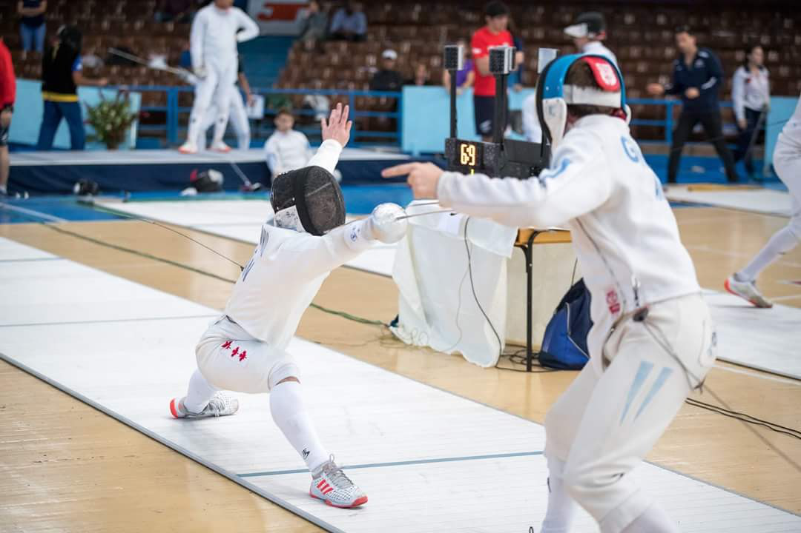

Hi! I'm Matthew

I am from Toronto, Canada and I love playing badminton, frisbee and hockey. I also enjoy following Formula 1 motorsport. I currently study at Queen's University in Kingston, Canada where I am also an active member of the Varsity Fencing Team. Currently I am on exchange at HEC Paris in Jouy-en-Josas, France. Below are a list of my interests!
Formula 1 🏁
After watching the Netflix documentary series Drive to Survive, I started following Formula 1 closely. My favourite team is Ferrari and my favourite driver is Charles Leclerc. Part of what makes the sport so interesting are the team and driver dynamics as well as the constant persistence to engineer the fastest car possible.
Craft Beers 🍺

Craft beers and breweries are extremely popular in Ontario. It has developed its own rich culture full of great people and innovative new beers. For example, one of my favourite breweries is Great Lakes Brewery located in Etobicoke, Ontario. They are extremely creative with their beers, creating a range of hoppy to citrusy brews. Personally, I really enjoyed their strawberry milkshake flavoured beer from the summer.
Fencing 🤺
I started fencing when I was 12 years old. At first I found the sport rather difficult given that I was not very tall. However, with the help of my 2-time olympian coach I worked hard and perservered to find success. I represented Canada on the world stage and became the Junior Canadian National Champion and now compete for my home university during my studies.